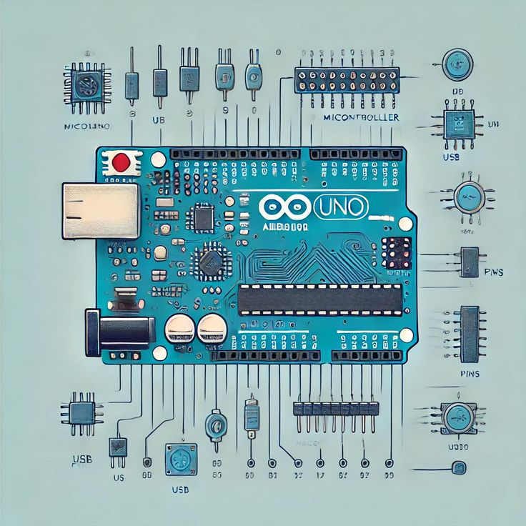
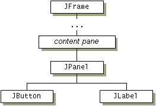

Projets réalisés
Voici une sélection de projets que j'ai réalisés dans le cadre de mes études. Ces projets m'ont permis de développer mes compétences en programmation, en gestion de données et en résolution de problèmes.
Système de gestion autoroutier

Développement d'une application de gestion des utilisateurs, trajets, abonnements et inconvénients.
Technologies : Java, SQL
Voir le code source
Détecteur de pollution connecté
Mesure en temps réel de l’humidité et de la qualité de l’air avec Arduino.
Voir le code sourceJeu de memory enrichi
Implémentation d’une version avancée du jeu de memory avec interface intuitive.
Voir le code sourceJeu d’aventure textuel
Développement d’un jeu en Java simulant l’exploration d’un plateau interactif.
Voir le code source